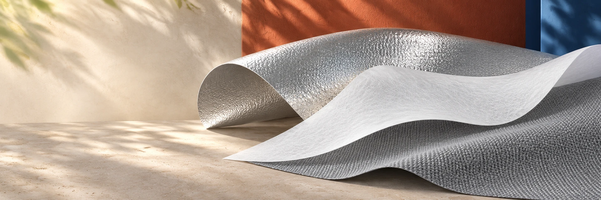
Fiberglass facers for your board
Compare surface finishes, material structures and product options for your board application.
Explore fiberglass facers
14 products
No matching products
Remove a selection or clear all filters to see more products.
-
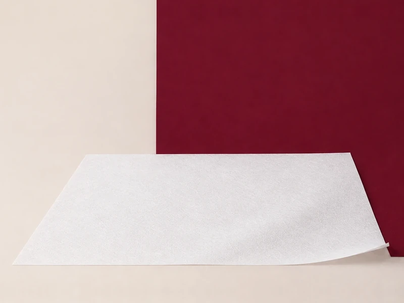
White Acoustic Ceiling Facer
A white coated fiberglass veil for mineral wool and glass wool acoustic ceiling panels.
Explore product -
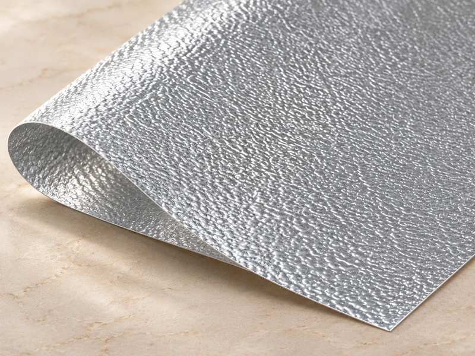
Aluminum Foil Facers for Thermal Insulation
Reflective aluminum surfaces with optional fiberglass reinforcement for suitable boards, pipe insulation and industrial applications.
Explore product -
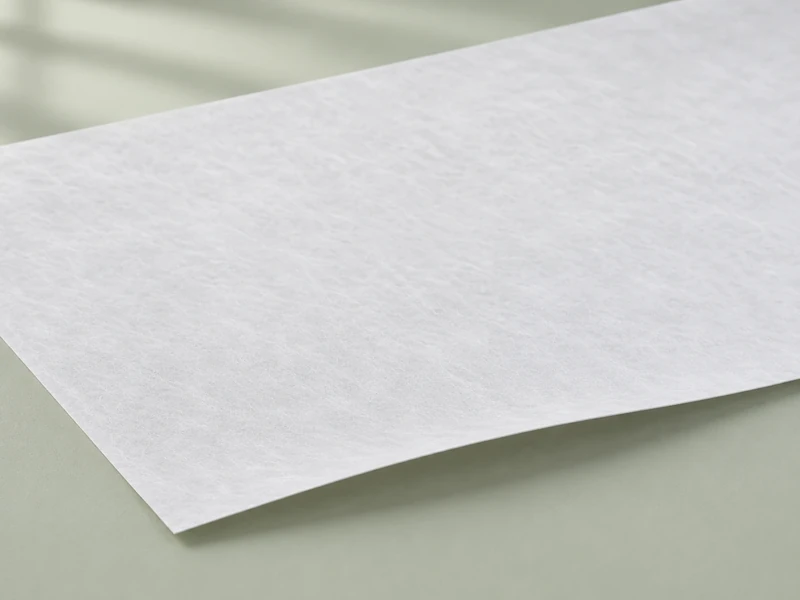
Fiberglass Coated Veil for Mineral Wool Roof Insulation
A coated fiberglass facing for mineral wool insulation boards in pitched roofs.
Explore product -
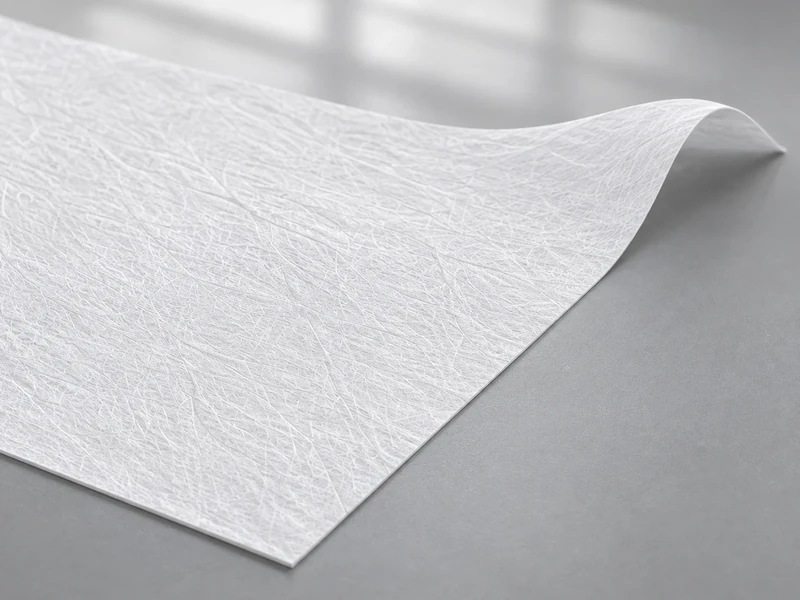
Fiberglass Coated Veil for PIR/PUR Insulation Boards
Coated fiberglass facing for rigid PIR/PUR boards.
Explore product -
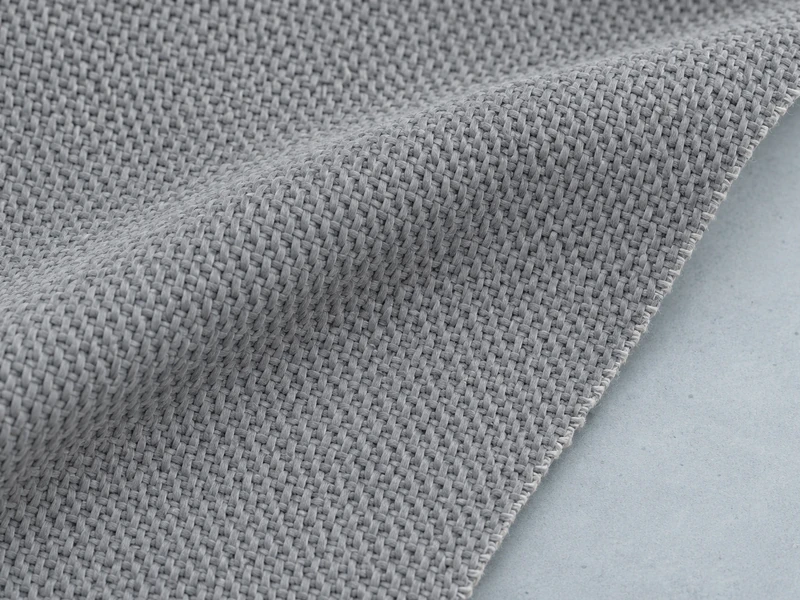
Acoustic Fiberglass Fabric
Woven fiberglass facing for mineral wool and glass wool acoustic panels.
Explore product -
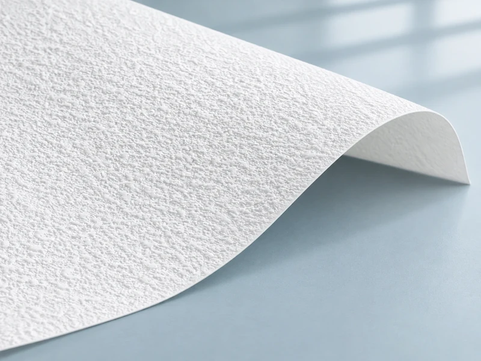
High-Air-Permeability Fiberglass Coated Veil
Permeable fiberglass facing for compatible mineral or glass wool acoustic panels.
Explore product -
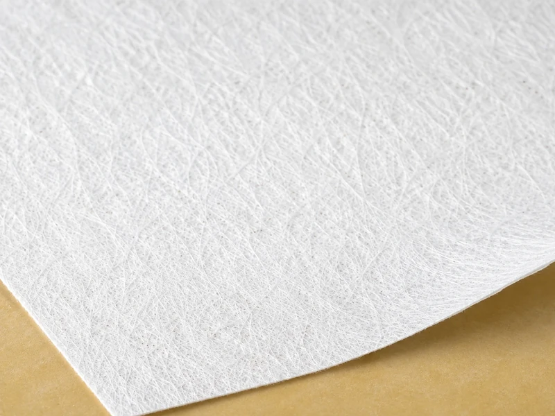
Low-Air-Permeability Fiberglass Coated Veil
Fiberglass facing with selectable airflow resistance for acoustic panels requiring controlled reflection.
Explore product -
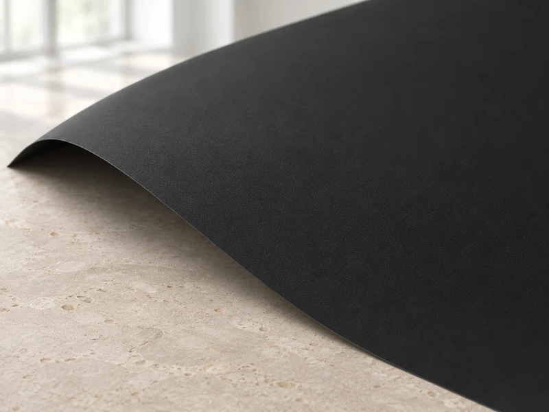
Matte Black Fiberglass Coated Veil
A matte black fiberglass facing for acoustic ceilings and walls in dark interiors.
Explore product -
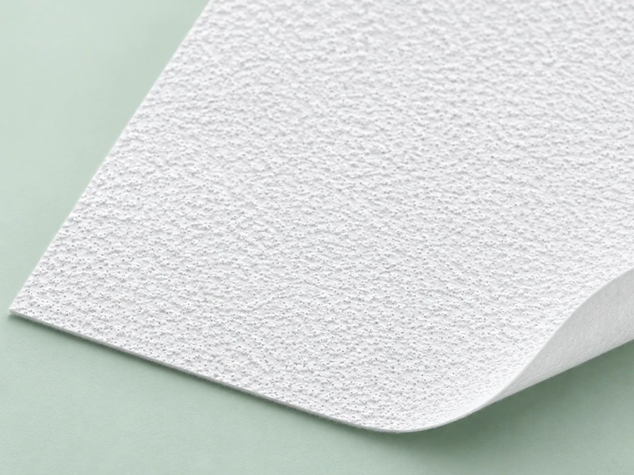
Washable Fiberglass Coated Veil
A coated fiberglass facing for acoustic ceiling panels requiring wiping and washing.
Explore product -
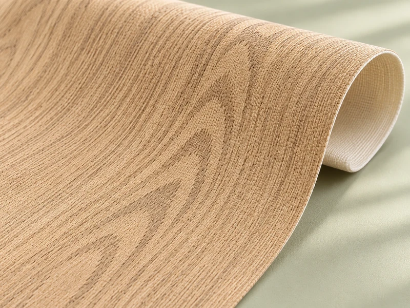
Wood Grain Acoustic Fiberglass Fabric
A woven fiberglass facing with a wood-inspired finish for acoustic ceiling and wall panels.
Explore product -
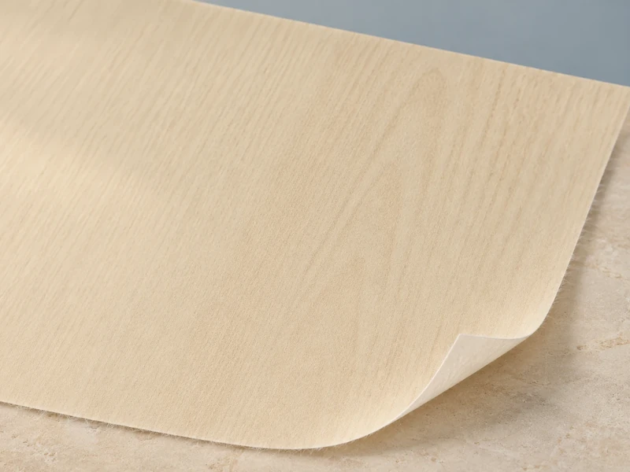
Wood Grain Fiberglass Coated Veil
A lightweight fiberglass veil with a wood grain coating for acoustic ceilings and walls.
Explore product -
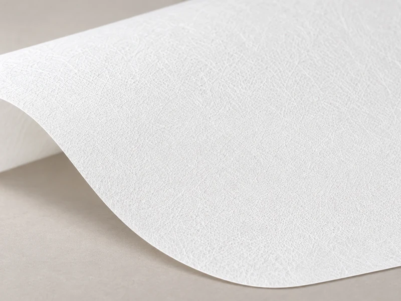
Fiberglass Coated Veil for Gypsum Board
Coated fiberglass facing for gypsum boards.
Explore product -
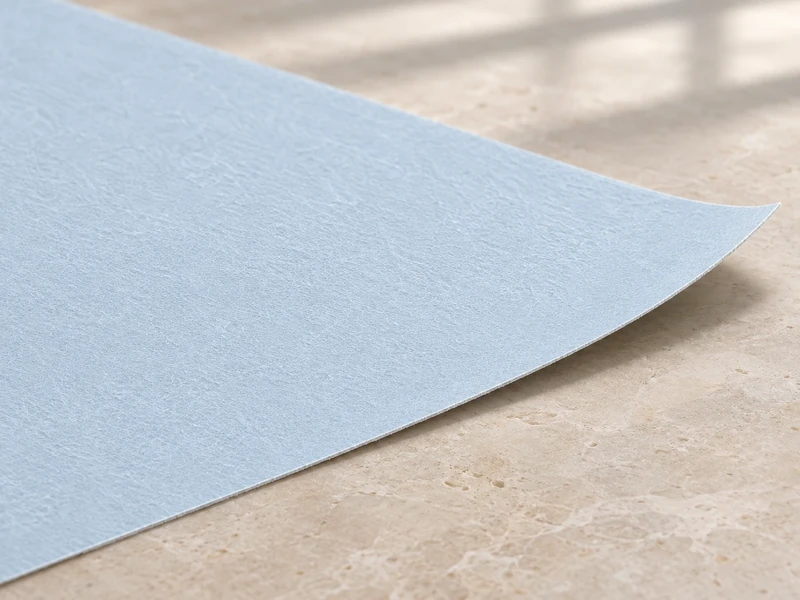
High-Waterproof Fiberglass Coated Veil for Gypsum Board
Water-resistant fiberglass facing for gypsum boards. Verify liquid-water penetration and slurry fit with grade-specific testing of the complete board or roofing assembly.
Explore product -
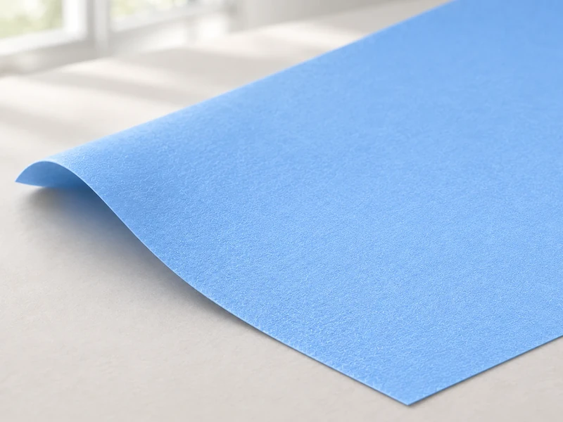
UV-Resistant Fiberglass Coated Veil
A UV-resistant coating on a stable fiberglass substrate for compatible gypsum and PIR/PUR panels.
Explore product
Questions before choosing a facer
How do I compare similar facers?
Compare the material structure, surface finish and intended use on each product page. Select the finish and grade against your board core and production process.
What should I validate before choosing a facer?
Review core compatibility, bonding or processing conditions and the required properties of the finished panel or assembly. Validation depends on the selected product and application.
What should I share with GRECHO?
Share your board type, core, preferred facing, production process and intended application. Include the performance or document requirements you need the team to review.